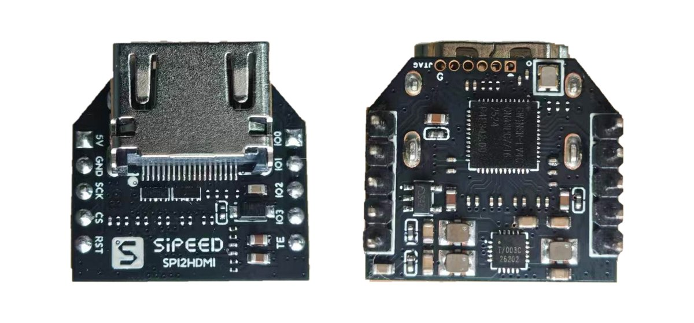
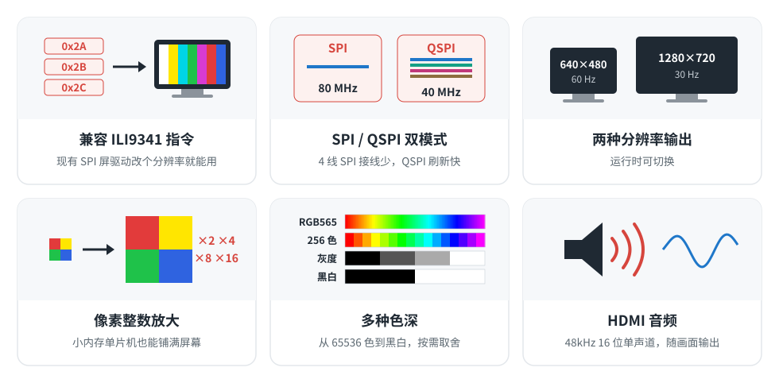
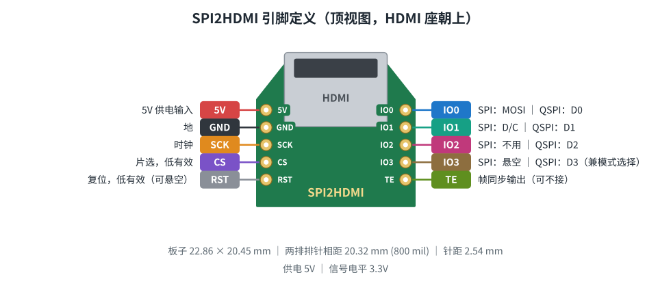
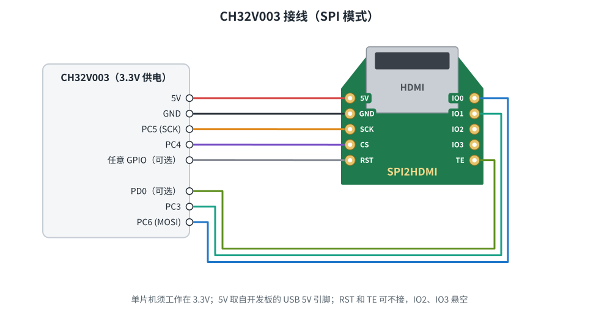
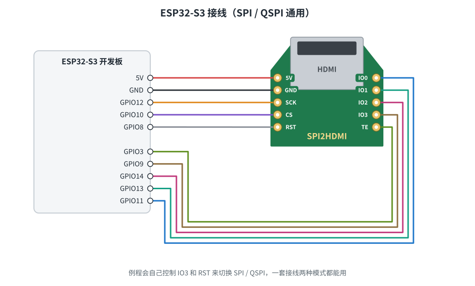
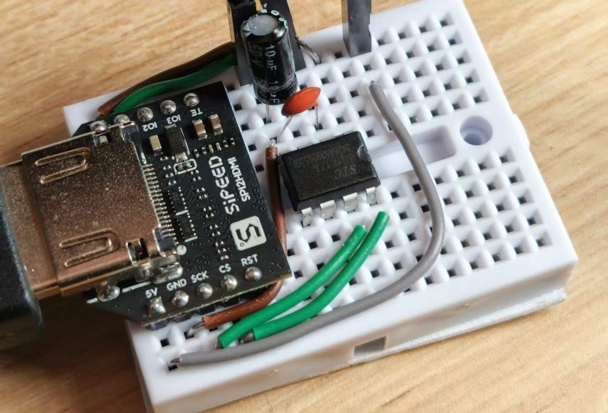
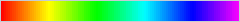

中文
中文SPI2HDMI 模块
更新历史
| 日期 | 版本 | 作者 | 更新内容 |
|---|---|---|---|
| 2026-11-28 | v0.2 | Sipeed |
|
| 2026-11-24 | v0.1 | Sipeed |
|
不甘心单片机的画面只能挤在一块小小的 SPI 屏上？想上大屏，却只会驱动 SPI 屏？
Sipeed SPI2HDMI 模块让任何带 SPI 的单片机都能把画面打到 HDMI 显示器和电视上。 它的指令兼容最常见的 ILI9341 SPI 屏：你怎么驱动 SPI 屏，就怎么驱动 HDMI。手里现成的屏幕驱动改一下分辨率就能用，一块邮票大小的模块，几根线，小单片机也能玩转大屏幕！
左上：STC8G1K17A（8 脚 51 单片机）驱动的全彩动画 ｜ 右上：CH32V004 上的小恐龙游戏
左下：ESP32-S3 运行 NES 模拟器 ｜ 右下：ESP32-S3 运行 LVGL 基准测试

特性

规格
| 项目 | 参数 |
|---|---|
| 供电 | 5V，约 0.1A |
| 信号电平 | 3.3V |
| 主机接口 | SPI：模式 0，高位在前，最高 80MHz；QSPI：最高 40MHz |
| 视频输出 | HDMI，640×480@60Hz 或 1280×720@30Hz |
| 显存 | 8MB |
| 尺寸 | 22.86 × 20.45 mm，两排 1×5 排针（2.54mm 针距，排距 20.32mm (800mil)，可直插面包板） |
引脚

简单说：SPI 模式只需要接 5V、GND、SCK、CS、IO0、IO1 六根线，其余悬空。
快速上手
先看彩条
只给模块接 5V 和 GND，HDMI 接显示器，上电后屏幕应显示 8 条竖彩条（白黄青绿紫红蓝黑）。看到彩条说明模块、线材和显示器都没问题。
接线
CH32V003 这类小单片机用 SPI 模式：

ESP32-S3 可以把十根线都接上，SPI 和 QSPI 都能用：

8 脚的 51 单片机也一样，面包板上插几根跳线就能点亮大屏，具体接法见 stc8 例程：

烧录例程
例程都在 GitHub：sipeed/SPI2HDMI_demo
| 平台 | 例程 | 烧录后应看到 |
|---|---|---|
| STC8G1K17A（8 脚 51） | stc8 |
640×480 全屏的 16 色动画，三个场景轮流播放 |
| CH32V003 / V004 | ch32/demo |
Bad Apple、生命游戏、分形轮流播放 |
| CH32V004 | ch32/arcade |
八项游戏菜单（需要支持 720p30 的显示器） |
| ESP32-S3 | esp32s3 |
彩条；在串口里输入命令可切换模式、分辨率和测试图 |
| ESP32-S3 | esp32s3/retro-go |
retro-go 模拟器合集：NES、Game Boy、Doom 等，画面和声音都走 HDMI（ROM 需自备） |
| 其他单片机 | common/spi2hdmi.h |
单头文件驱动，填三个回调函数即可 |
画你自己的内容
和 ILI9341 一样，三步：选色深、设窗口、写像素。
#include "spi2hdmi.h"
spi2hdmi_t lcd;
spi2hdmi_hal_t hal = { my_spi_write, my_set_dc, my_set_cs }; // 你的三个底层函数
s2h_init(&lcd, &hal);
s2h_set_format(&lcd, S2H_FMT_RGB565);
s2h_set_scale(&lcd, S2H_SCALE_2X); // 放大 2 倍，画布变成 320×240
s2h_fill565(&lcd, 0, 0, 319, 239, 0x001F); // 整屏刷成蓝色
已经在用 TFT_eSPI、LVGL 等库时，按 ILI9341 配置驱动，把分辨率改成当前画布大小即可。
SPI 与 QSPI 模式
模块在 RST 释放的瞬间读取 IO3 的电平来决定工作模式，之后保持不变，直到下一次复位：
| IO3 在复位释放时 | 模式 | 引脚用法 |
|---|---|---|
| 悬空或低电平 | SPI | IO0 = MOSI，IO1 = D/C |
| 高电平（保持 1ms 以上） | QSPI | IO0~IO3 = D0~D3，不再使用 D/C |
所以用 SPI 时 IO3 不接就行。用 QSPI 时，让单片机先把 IO3 拉高、给 RST 一个低脉冲，再把 IO3 交还给 QSPI 外设。QSPI 的帧格式与 SH8601、AXS15231B 等屏相同，ESP-IDF 下可直接使用仓库里的 esp_lcd_spi2hdmi 组件。
⚠️ 关于高速时钟：SPI 80MHz、QSPI 40MHz 对杜邦线和面包板来说已经偏高。如果画面抖动、出现噪点或花屏，请缩短连线、让地线紧挨 SCK，或者先把时钟降到 20~40MHz。
分辨率与放大
画布大小 = 输出分辨率 ÷ 放大倍数。画布越小，单片机每帧要发的数据越少。
| 输出模式 | 放大倍数（0x88 的参数） |
画布大小 |
|---|---|---|
| 640×480@60Hz | 1× / 2× / 4× / 8× / 16×（0~4） | 640×480 / 320×240 / 160×120 / 80×60 / 40×30 |
| 1280×720@30Hz | 2× / 4× / 8× / 16×（0~3） | 640×360 / 320×180 / 160×90 / 80×45 |
切换输出模式（0x8B）时画面会黑一下，显存内容保留。部分电脑显示器不支持 720p30，电视一般都支持。
指令
ILI9341 兼容指令：
| 指令 | 名称 | 参数 | 说明 |
|---|---|---|---|
0x2A |
CASET | x0、x1（各 2 字节，高字节在前） | 列窗口 |
0x2B |
PASET | y0、y1 | 行窗口 |
0x2C |
RAMWR | 像素数据 | 从窗口左上角开始写，自动换行 |
0x3C |
RAMWRC | 像素数据 | 从上次停下的位置接着写 |
0x3A |
COLMOD | 1 字节 | 色深，见下表 |
0x36 |
MADCTL | 1 字节 | 只有 BGR 位有效，不支持旋转 |
0x20 / 0x21 |
INVOFF / INVON | 无 | 反色关 / 开 |
0x28 / 0x29 |
DISPOFF / DISPON | 无 | 黑屏 / 恢复显示 |
0x01 |
SWRESET | 无 | 恢复默认设置，不清除画面 |
其余 ILI9341 指令会被安全忽略。扩展指令：
| 指令 | 参数 | 说明 |
|---|---|---|
0x88 |
1 字节 | 放大倍数，见上一节 |
0x8B |
0 或 1 | 输出模式：0 = 640×480@60，1 = 1280×720@30 |
0x89 |
R、G、B | 灰度和黑白格式的基底颜色（"最亮"时显示的颜色），默认白色 |
0x8A |
16 字节（RGB332） | 16 色模式的调色板 |
0x8E |
音频数据 | 48kHz、16 位、单声道、低字节在前的 PCM，随 HDMI 输出 |
色深（0x3A 的参数）：
| 参数 | 格式 | 每像素 | 颜色示意 |
|---|---|---|---|
0x55 |
RGB565（默认） | 2 字节，高字节在前 |  |
0x32 |
RGB332，256 色 | 1 字节 | |
0x24 |
16 色调色板 | 半字节 | |
0x14 |
4 位灰度，可着色 | 半字节 | |
0x12 |
2 位灰度，可着色 | 1/4 字节 | |
0x11 |
黑白，可着色 | 1/8 字节 |
灰度和黑白格式可以用 0x89 指定基底颜色，画面就从黑渐变到这个颜色，而不是到白色。例如把 4 位灰度设成琥珀色 ，或把 2 位灰度设成绿色 ，很适合做复古终端、单色屏风格的界面。
不足一字节的格式，窗口的起始列和宽度要对齐到整字节（例如黑白模式是 8 的倍数）。
性能与选型
整屏刷新的帧率取决于每帧字节数和总线速率。下表是按总线速率计算的上限，实际还要减去单片机准备数据的时间；帧率不会超过输出刷新率（60 或 30）。
| 画布与色深 | 每帧字节 | SPI 24MHz | SPI 40MHz | SPI 80MHz | QSPI 40MHz |
|---|---|---|---|---|---|
| 640×480 RGB565 | 614,400 | 4.9 | 8.1 | 16 | 32 |
| 640×480 RGB332 | 307,200 | 9.8 | 16 | 32 | 60 |
| 640×480 黑白 | 38,400 | 60 | 60 | 60 | 60 |
| 320×240 RGB565 | 153,600 | 19 | 32 | 60 | 60 |
| 320×240 RGB332 | 76,800 | 39 | 60 | 60 | 60 |
| 160×120 RGB565 | 38,400 | 60 | 60 | 60 | 60 |
| 640×360 RGB565（720p） | 460,800 | 6.5 | 10 | 21 | 30 |
| 320×180 RGB565（720p） | 115,200 | 26 | 30 | 30 | 30 |
实测参考（ESP32-S3，640×480 RGB565 整屏）：SPI 80MHz 约 69ms 一帧，QSPI 40MHz 约 39ms 一帧。只更新画面中变化的区域时，帧率会高得多。
怎么选平台：
| 你的单片机 | 建议用法 |
|---|---|
| 小内存 MCU（CH32V003 等，SPI 20MHz 左右） | SPI 模式；160×120 或更小的画布，或用黑白 / 16 色格式跑高分辨率；只刷变化的区域 |
| 带 DMA 的 32 位 MCU（SPI 40~80MHz） | SPI 模式；320×240 RGB565 可以整屏 30~60 帧，适合 LVGL 界面 |
| 支持 QSPI 的 MCU（ESP32-S3 等） | QSPI 模式；640×480 RGB565 整屏刷新、模拟器、视频播放 |
复位与 TE
- RST：低电平复位，内部已上拉，可以不接。复位后恢复默认设置并重新读取 IO3；显存内容不会被清除。
- TE：帧同步输出，在每帧的消隐期间为高电平（640×480 时约 1.4ms，720p 时约 1.3ms）。在 TE 上升沿开始写数据可以减轻画面撕裂，不需要时可以不接。
常见问题
屏幕没有信号或一直黑屏
先只接电源和 HDMI 看彩条。没有彩条时，检查 5V 供电是否充足、HDMI 线是否插好，再换一台显示器试试。
有彩条，但单片机写不上画面
检查 SCK、CS、IO0、IO1 四根线和共地；确认 SPI 是模式 0、高位在前；确认 IO3 在上电时没有被拉高（拉高会进入 QSPI 模式）。
画面抖动、有噪点或错位
多半是时钟太快或连线太长，见上面关于高速时钟的提醒。
切到 720p 后显示器提示不支持
1280×720@30Hz 不是所有电脑显示器都支持，换电视或改回 640×480。
能接 5V 电平的单片机吗
模块的信号脚是 3.3V 电平，5V IO 的单片机需要在信号线上加电平转换。现在常见的单片机基本都是 3.3V，可以直接连接。
能读回显存或屏幕 ID 吗
不能，模块只接收数据。画面旋转也需要在单片机一侧完成。
相关链接
- 例程代码：github.com/sipeed/SPI2HDMI_demo
- 购买：敬请期待